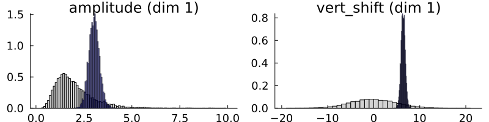
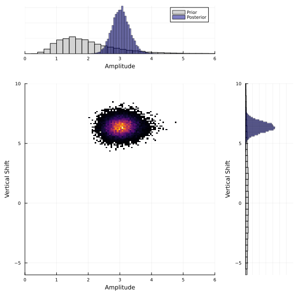
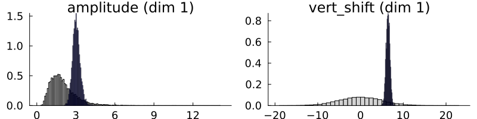
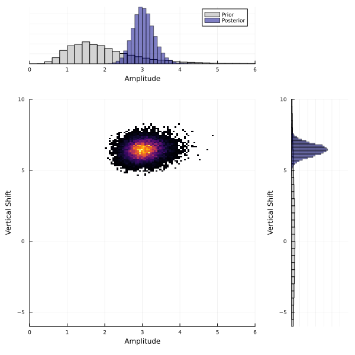

Sinusoid Example
Background
This example demonstrates how to use CalibrateEmulateSample.jl for a simple model that generates noisy observables of a signal. The sinusoid signal is defined by two parameters: its shift along an axis and its amplitude. We make noisy observations of the signal and we can calculate the mean of the signal, which is informative about its shift along the axis, and the range of the signal, which is informative about the amplitude. We show how we can carry out uncertainty quantification on our parameter values, given some observations and a model of this problem.
Model
We have a model of a sinusoidal signal that is a function of parameters $\theta=(A,v)$, where $A$ is the amplitude of the signal and $v$ is vertical shift of the signal: $f(A, v) = A \sin(\phi + t) + v, \forall t \in [0,2\pi]$ Here, $\phi$ is the random phase of each signal. The goal is to estimate the not just point estimates of the parameters $\theta=(A,v)$, but entire probability distributions of them, given some noisy observations. We will use the range and mean of a signal as our observable: $G(\theta) = \big[ \text{range}\big(f(\theta)\big), \text{mean}\big(f(\theta)\big) \big] $$ Then, our noisy observations, $y_{obs}$, can be written as: $$y_{obs} = G(\theta) + \mathcal{N}(0, \Gamma)$ where $\Gamma$ is the observational covariance matrix. We will assume the noise to be independent for each observable, giving us a diagonal covariance matrix.
Walkthrough of code
The code is split into four sections:
- Model set up in
sinusoid_setup.jl - Calibrate in
calibrate.jl - Emulate in
emulate.jl - Sample in
sample.jl
You do not need to explicitly run sinusoid_setup.jl as it is called from calibrate.jl. However, this file contains the functions for the model and for generating pseudo-observations. You will need to run steps 1-3 in order as each one relies on output saved from the previous steps.
Set up
First, we load the packages we need:
using LinearAlgebra, Random
using Plots
using JLD2Define a model which generates a sinusoid given parameters $\theta=(A,v)$ (amplitude and vertical shift). We will estimate these parameters from data. The model adds a random phase shift upon evaluation.
# Seed for pseudo-random number generator.
rng_seed = 41
rng = Random.MersenneTwister(rng_seed)
# Define x-axis
dt = 0.01
trange = 0:dt:(2 * pi + dt)
function model(amplitude, vert_shift)
phi = 2 * pi * rand(rng)
return amplitude * sin.(trange .+ phi) .+ vert_shift
end
We will define a "true" amplitude and vertical shift, to generate some pseudo-observations. Let $\theta=(3.0, 7.0)$.
amplitude_true = 3.0
vert_shift_true = 7.0
# Our input parameters are 2d and our outputs are 2d
theta_true = [amplitude_true, vert_shift_true]
dim_params = 2
# Generate the "true" signal for these parameters
signal_true = model(amplitude_true, vert_shift_true)We will observe properties of the signal that inform us about the amplitude and vertical position. These properties will be the range (the difference between the maximum and the minimum), which is informative about the amplitude of the sinusoid, and the mean, which is informative about the vertical shift.
y1_true = maximum(signal_true) - minimum(signal_true)
y2_true = mean(signal_true)However, our observations are typically not noise-free, so we add some white noise to our observables. We call this $y_{obs}$. The user can choose the observational covariance matrix, $\Gamma$. We will assume the noise is independent (a diagonal covariance matrix $\Gamma=0.2 * I$).
dim_output = 2
Γ = 0.2 * I
white_noise = MvNormal(zeros(dim_output), Γ)
y_obs = [y1_true, y2_true] .+ rand(white_noise)
y1_obs = y[1]
y2_obs = y[2]
println("Observations:", y_obs)This gives $y_{obs}=(6.15, 6.42)$. We plot the true signal in black, the true observables in red and the noisy observables in blue.
p = plot(signal_true, color = :black, linewidth = 3, label = "True signal")
hline!([y2_true],color=:red, style=:dash, linewidth=2, label="True mean: " * string(round(y2_true, digits=2)) )
plot!([argmax(signal_true),argmax(signal_true)], [minimum(signal_true), maximum(signal_true)],
arrows=:both, color=:red, linewidth=2, label="True range: " * string(round(y1_true, digits=2)) )
hline!([y2_obs],color=:blue, style=:dash, linewidth=1, label="Observed mean: " * string(round(y2_obs, digits=2)) )
plot!([argmax(signal_true)+10, argmax(signal_true)+10], [y2_true - y1_obs/2, y2_true + y1_obs/2],
arrows=:both, color=:blue, linewidth=1, label="Observed range: " * string(round(y1_obs, digits=2)) )It will be helpful for us to define a function $G(\theta)$, which returns these observables (the range and the mean) of the sinusoid given a parameter vector.
function G(theta)
amplitude, vert_shift = theta
sincurve = model(amplitude, vert_shift)
return [maximum(sincurve) - minimum(sincurve), mean(sincurve)]
endCalibrate
For the calibration step, we need to solve the inverse problem $y=G(\theta)+\mathcal{N}(0,\Gamma)$. In other words, we need to find the optimal values for $\theta$. First, load the packages we need from CES.
# CES
using CalibrateEmulateSample
const EKP = CalibrateEmulateSample.EnsembleKalmanProcesses
const PD = EKP.ParameterDistributionsWe define prior distributions on the two parameters. For the amplitude, we define a prior with mean 2 and standard deviation 1. It is additionally constrained to be nonnegative. For the vertical shift we define a Gaussian prior with mean 0 and standard deviation 5.
prior_u1 = PD.constrained_gaussian("amplitude", 2, 1, 0, Inf)
prior_u2 = PD.constrained_gaussian("vert_shift", 0, 5, -Inf, Inf)
prior = PD.combine_distributions([prior_u1, prior_u2])
# Plot priors
p = plot(prior)
We now generate the initial ensemble and set up the ensemble Kalman inversion.
N_ensemble = 10
N_iterations = 5
initial_ensemble = EKP.construct_initial_ensemble(rng, prior, N_ensemble)
ensemble_kalman_process = EKP.EnsembleKalmanProcess(initial_ensemble, y_obs, Γ, EKP.Inversion(); rng = rng)We are now ready to carry out the inversion. At each iteration, we get the ensemble from the last iteration, apply $G(\theta)$ to each ensemble member, and apply the Kalman update to the ensemble.
for i in 1:N_iterations
params_i = EKP.get_ϕ_final(prior, ensemble_kalman_process)
G_ens = hcat([G(params_i[:, i]) for i in 1:N_ensemble]...)
EKP.update_ensemble!(ensemble_kalman_process, G_ens)
endFinally, we get the ensemble after the last iteration. This provides our estimate of the parameters.
final_ensemble = EKP.get_ϕ_final(prior, ensemble_kalman_process)
# Check that the ensemble mean is close to the theta_true
println("Ensemble mean: ", mean(final_ensemble, dims=2)) # [3.08, 6.37]
println("True parameters: ", theta_true) # [3.0, 7.0]| Parameter | Truth | EKI mean |
|---|---|---|
| Amplitude | 3.0 | 3.08 |
| Vertical shift | 7.0 | 6.37 |
The EKI ensemble mean at the final iteration is close to the true parameters, which is good. We can also see how the ensembles evolve at each iteration in the plot below.
The ensembles are initially spread out but move closer to the true parameter values with each iteration, indicating the EKI algorithm is converging towards the minimum. Taking the mean of the ensemble gives a point estimate of the optimal parameters. However, EKI does not give us an estimate of the uncertainty, as the ensemble collapses. To carry out uncertainty quantification, we can sample from the posterior distribution, which requires a "cheap" method to evaluate our model, i.e., an emulator. In the next step of CES, we will build an emulator using the dataset generated in EKI.
Emulate
In the previous calibrate step, we learned point estimates for the optimal parameters $\theta$, but for uncertainty quantification, we want to learn posterior distributions on our parameters. We can sample from posterior distributions with Markov chain Monte Carlo (MCMC) methods, but these typically require many model evaluations. In many scientific problems, model evaluations are highly costly, making this infeasible. To get around this, we build an emulator of our model, which allows us to approximate the expensive model almost instantaneously. An emulator can also be helpful for noisy problems as they provide a smoother approximation, leading to better MCMC convergence properties. In this section, we show how the codebase can be used to build emulators of our sinusoid model.
We ran Ensemble Kalman Inversion with an ensemble size of 10 for 5 iterations. This generated a total of 50 input output pairs from our model. We will use these samples to train an emulator. The EKI samples make a suitable dataset for training an emulator because in the first iteration, the ensemble parameters are spread out according to the prior, meaning they cover the full support of the parameter space. This is important for building an emulator that can be evaluated anywhere in this space. In later iterations, the ensemble parameters are focused around the truth. This means the emulator that will be more accurate around this region.
Load additional packages we need for this section.
using CalibrateEmulateSample.EmulatorsWe will build two types of emulator here for comparison: Gaussian processes and Random Features. First, set up the data in the correct format. CalibrateEmulateSample.jl uses a paired data container that matches the inputs (in the unconstrained space) to the outputs:
input_output_pairs = CES.Utilities.get_training_points(ensemble_kalman_process, N_iterations)
unconstrained_inputs = CES.Utilities.get_inputs(input_output_pairs)
inputs = Emulators.transform_unconstrained_to_constrained(prior, unconstrained_inputs)
outputs = CES.Utilities.get_outputs(input_output_pairs)Gaussian process
We will set up a basic Gaussian process (GP) emulator using the ScikitLearn.jl package or GaussianProcesses.jl. See the Gaussian process page for more information and options, including choice of package and kernels.
gppackage = Emulators.GPJL()
gauss_proc = Emulators.GaussianProcess(gppackage, noise_learn = false)
# Build emulator with data
emulator_gp = Emulator(gauss_proc, input_output_pairs, normalize_inputs = true, obs_noise_cov = Γ)
optimize_hyperparameters!(emulator_gp)For this simple example, we already know the observational noise Γ=0.2*I, so we set noise_learn = false. However, for more complicated problems we may want to learn the noise as an additional hyperparameter.
We will check performance of the GP by testing on unseen data. We do this by generating some additional data from our true model for a set of 10 parameters.
amplitude_points = range(0.4, 4, length = 10)
shift_points = range(-1, 8, length = 10)
x_test = hcat(shuffle(amplitude_points), shuffle(shift_points))'
# benchmark against true model
y_true = zeros(2, length(amplitude_points))
for i in 1:length(amplitude_points)
y_true[:, i] = G(x_test[:, i])
end
# emulator is built in unconstrained space, we need to first transform our variables
x_test_unconstrained = Emulators.transform_constrained_to_unconstrained(prior, x_test)
y_gp, y_gp_covs = Emulators.predict(emulator_gp, x_test_unconstrained, transform_to_real=true);
# This predicts an output and a covariance matrix.
# Estimate root mean squared error
rmse_gp = sqrt.(mean((y_gp - y_true).^2, dims=2))
println("RMSE GP:", rmse_gp) # [1.0188362036675438; 0.10148451670974754;;]One metric for assessing emulator performance is to calculate the root mean squared error of our test set, in this case (1.02, 0.10). These errors are relatively small compared against the outputs, around 10%. You could also consider other metrics, such as R^2, mean absolute error or log likelihood. It is also helpful to check emulator performance by plotting the true output against the predicted output.

For a perfect GP emulator, our predictions should line up with the true output, along the y=x dashed line. We find that this is mostly the case, except for large values of y_1. This is not too surprising, because this region is more extrapolation rather than interpolation, as EKI focuses our training data towards the truth (see figure about). We should also check that GP uncertainties are reasonable, and ideally they should be larger for points further away from training data. The error bars in the figure above shows 1 standard deviation, so we expect that at least 68% of the points should be in agreement with the y=x line when considering these error bars.
Random Features
An alternative emulator can be created with random features (RF). Random features can approximate a Gaussian process with improved scaling properties, making them more suitable for for higher dimensional problems. More information can be found (here)[https://clima.github.io/CalibrateEmulateSample.jl/dev/randomfeatureemulator/].
# Select number of features
n_features = 60
nugget = 1e-12
kernel_structure = SeparableKernel(LowRankFactor(2, nugget), OneDimFactor())
# Create random features
optimizer_options =
Dict("n_ensemble" => 20, "scheduler" => EKP.DataMisfitController(on_terminate = "continue"), "n_iteration" => 50)
random_features = ScalarRandomFeatureInterface(
n_features,
input_dim,
kernel_structure = kernel_structure,
optimizer_options = optimizer_options,
)
emulator_random_features = Emulator(random_features, input_output_pairs, normalize_inputs = true)
optimize_hyperparameters!(emulator_random_features)We will also test this on the same data we created for the validation of the Gaussian process.
y_rf, y_rf_covs = Emulators.predict(emulator_random_features, x_test_unconstrained);
# Estimate root mean squared error
rmse_rf = sqrt.(mean((y_rf - y_true).^2, dims=2))
println("RMSE RF:", rmse_rf) # [2.3993665360796514; 1.4247135862280327;;]
This comparison shows the GP emulator is more accurate on the test data compared to the RF emulator. Both methods are more accurate around $y_{obs}=(6.15,6.42)$ with worse performance at the edges, especially for large y1. This is as expected, because our training dataset from EKI has more points focused around theta_true. RF gives slightly larger uncertainty estimates, but these are reasonably similar.
Sample
Now that we have a cheap emulator for our model, we can carry out uncertainty quantification to learn the posterier distribution of the parameters, $\theta$. We use Markov chain Monte Carlo (MCMC) to sample the posterior distribtion. In MCMC, we start with a sample from a prior distribution and propose a new sample from a proposal distribution, which is accepted with a probability relating the the ratio of the posterior distribution to the proposal distributions. If accepted, this proposed sample is added to the chain, or otherwise, the original sample is added to the chain. This is repeated over many iterations and eventually creates a sequence of samples from the posterior distribution. The CES code uses AbstractMCMC.jl, full details can be found here. For this example, we will use a random walk Metropolis-Hastings sampler (RWMHSampling), which assumes that the proposal distribution is a random walk, with a step-size \delta. Usually, we have little knowledge of what this step size should be, but we can optimize this as shown below.
First, load additional packages we need
using CalibrateEmulateSample.MarkovChainMonteCarloWe will provide the API with the observations, priors and our cheap emulator from the previous section. In this example we use the GP emulator.
mcmc = MCMCWrapper(RWMHSampling(), y_obs, prior, emulator; init_params = init_sample)
# First let's run a short chain to determine a good step size
new_step = optimize_stepsize(mcmc; init_stepsize = 0.1, N = 2000, discard_initial = 0)
# Now begin the actual MCMC
println("Begin MCMC - with step size ", new_step)
chain = MarkovChainMonteCarlo.sample(mcmc, 100_000; stepsize = new_step, discard_initial = 2_000)
# We can print summary statistics of the MCMC chain
display(chain)| parameters | mean | std |
|---|---|---|
| amplitude | 1.1040 | 0.0868 |
| vert_shift | 6.3696 | 0.4645 |
Note that these values are provided in the unconstrained space. The vertical shift seems reasonable, but the amplitude is not. This is because the amplitude is constrained to be positive, but the MCMC is run in the unconstrained space. We can transform to the real constrained space and re-calculate these values.
# Extract posterior samples
posterior = MarkovChainMonteCarlo.get_posterior(mcmc, chain)
# Back to constrained coordinates
constrained_posterior = Emulators.transform_unconstrained_to_constrained(
prior, MarkovChainMonteCarlo.get_distribution(posterior)
)This gives: | parameters | mean | std | | :–––––––– | :–––: | :––: | | amplitude | 3.0277 | 0.2620 | | vert_shift | 6.3696 | 0.4645 |
This is in agreement with the true $\theta=(3.0, 7.0)$ and with the observational covariance matrix we provided $\Gamma=0.2 * I$ (i.e., a standard deviation of approx. $0.45$).
# We can quickly plot priors and posterior using built-in capabilities
p = plot(prior)
plot!(posterior)

For multi-dimensional problems, we may be interested in how the posterior distributions for each parameter co-vary. We plot a 2D histogram of $\theta_1$ vs $\theta_2$ below.

Sample with Random Features
We can do the same sampling method using the random features emulator instead of the Gaussian process. The random features emulator showed weaker performance and larger uncertainty estimates, especially for predicting y1. As a result, the posterior distributions are wider. It appears that y1 is not so well constrained and looks more similar to the prior distribution. This highlights the need for careful emulator validation, to understand where and how the emulator performance could affect posterior samples.

We also see this in the 2d histogram:
